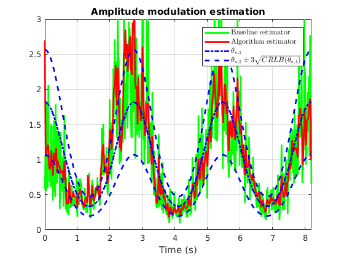
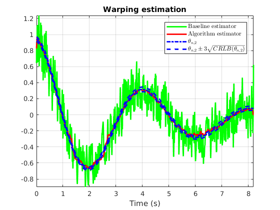
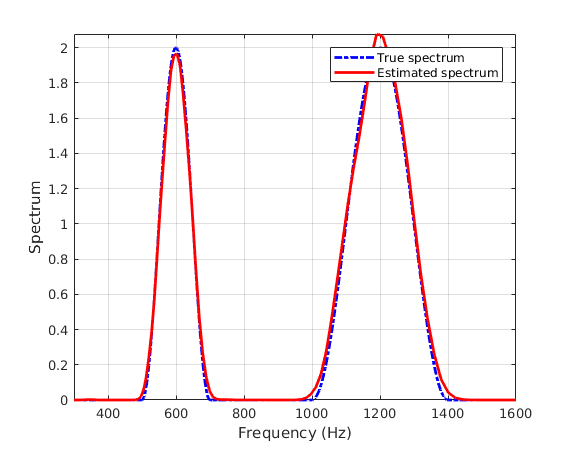
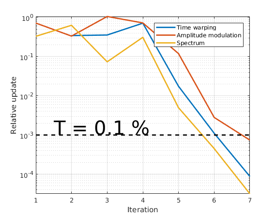

Deformation estimations on a synthetic signal
Copyright (C) 2017 Adrien MEYNARD
This program is free software; you can redistribute it and/or modify it under the terms of the GNU General Public License as published by the Free Software Foundation; either version 3 of the License, or (at your option) any later version.
This program is distributed in the hope that it will be useful, but WITHOUT ANY WARRANTY; without even the implied warranty of MERCHANTABILITY or FITNESS FOR A PARTICULAR PURPOSE. See the GNU General Public License for more details.
You should have received a copy of the GNU General Public License along with this program. If not, see http://www.gnu.org/licenses/.
Author: Adrien MEYNARD Email: adrien.meynard@univ-amu.fr Created: 2017-12-19
Contents
Load signal
clear all; close all; clc; warning off; addpath('cwt'); addpath('deform_estimation'); load('signals/toy_sig_paper'); T = length(y);
Joint estimation
Dt = 200; % temporal subsampling for the deformation estimation dgamma0 = ones(1,T); % gamma'(t) initialization a0 = ones(1,T); % a(t) initialization wav_typ = 0; % wavelet type (cf. cwt.m) wav_paramWP = 25; % corresponding parameter for warping estimation wav_param = 500; % corresponding parameter for spectrum and AM estimations NbScales = 106; scalesAM = 2.^(linspace(-1,3.5,NbScales)); subrate = 7; % subsampling step for the scales to ensure the covariance invertibility scalesWP = scalesAM(1:subrate:end); stopWP = 2e-2; % minimal gap between two steps in the gradient itWP = 6; % number of gradient iterations r = 1e-3; % regularization parameter Nf = 2500; % number of frequencies for spectrum estimation NbScalesS = 212; scalesS = 2.^(linspace(-1,3.5,NbScalesS)); % for spectrum estimation Nit = 10; % maximal number of iterations in the joint estimation stop_crit = 1e-3; % relative update threshold paramWAV = {wav_typ,wav_param,wav_paramWP}; paramAM = {'AM',scalesAM,r}; % AM (model without noise) paramWP = {scalesWP,itWP,stopWP}; paramS = {scalesS,Nf}; tic; [aML, dgammaML, Sxest, evol_crit] = estim_altern(y,Dt,dgamma0,a0,paramWAV,paramWP,paramAM,paramS,stop_crit,Nit); toc;
Iteration 1 Relative update WP: Inf % Relative update AM: 71.71 % Iteration 2 Relative update WP: 34.37 % Relative update AM: 33.32 % Iteration 3 Relative update WP: 35.52 % Relative update AM: 105.53 % Iteration 4 Relative update WP: 71.20 % Relative update AM: 72.27 % Iteration 5 Relative update WP: 1.75 % Relative update AM: 11.91 % Iteration 6 Relative update WP: 0.11 % Relative update AM: 0.28 % Iteration 7 Relative update WP: 0.01 % Relative update AM: 0.07 % Elapsed time is 69.789505 seconds.
Deformations estimation
addpath('analysis') Wy = cwt(y,scalesAM,0,wav_param); thetaWP_B = baselinewarpest(Wy,scalesAM); thetaAM_B = baselineAMest(Wy); thetaWPV = log2(dgamma(1:Dt:end)).'; thetaAMV = (a(1:Dt:end).^2).'; bWP = crlbWP(thetaWPV,thetaAMV,Sx+eps,scalesWP,wav_typ,wav_paramWP); WPinf = thetaWPV - 3*sqrt(bWP); WPsup = thetaWPV + 3*sqrt(bWP); bAM = crlbAM(thetaAMV,scalesAM); AMinf = thetaAMV - 3*sqrt(bAM); AMsup = thetaAMV + 3*sqrt(bAM); t = linspace(0,(T-1)/Fs,T); th = t(1:Dt:end); figure; plot(t,thetaAM_B,'g',t,aML.^2,'r',t,a.^2,'b-.',th,AMinf,'b--',th,AMsup,'b--','linewidth',2); grid on; title('Amplitude modulation estimation'); legend({'Baseline estimator','Algorithm estimator','$\theta_{n,1}$','$\theta_{n,1} \pm 3\sqrt{CRLB(\theta_{n,1})}$'},'Interpreter','latex'); axis([0 t(end) 0 3]); xlabel('Time (s)'); ylabel(''); figure; plot(t,thetaWP_B,'g',t,log2(dgammaML),'r',t,log2(dgamma),'b-.',th,WPinf,'b--',th,WPsup,'b--','linewidth',2); grid on; axis tight; title('Warping estimation'); legend({'Baseline estimator','Algorithm estimator','$\theta_{n,2}$','$\theta_{n,2}\pm 3\sqrt{CRLB(\theta_{n,2})}$'},'interpreter','latex'); xlabel('Time (s)'); ylabel(''); 
Spectrum estimation
freq = linspace(0,Fs,2*Nf - 1); figure; plot(freq,Sx,'-.b',freq,Sxest,'r','linewidth',2); xlabel('Frequency (Hz)');ylabel('Spectrum'); grid on; axis tight; legend('True spectrum','Estimated spectrum'); V=axis; axis([300 1600 0 V(4)]);
Stopping criterion
Nit = size(evol_crit,1); figure; semilogy(evol_crit,'linewidth',2); hold on; semilogy(1:Nit,0.001*ones(Nit,1),'k--','linewidth',2); % threshold text(1.5,1.5e-3,'\fontsize{30}T = 0.1 %'); legend('Time warping','Amplitude modulation','Spectrum'); axis tight; grid on; xlabel('Iteration'); ylabel('Relative update');
MSE
errAM = (aML(:).^2 - a.^2).^2; errAM = errAM(Dt:end); % First sample of thetaAM is rejected because of boundaries effect mseAM = mean(errAM.^2); mseAM0 = mean((thetaAM_B(:) - a.^2).^2); mseWP = mean((log2(dgammaML(:)) - log2(dgamma)).^2); mseWP0 = mean((thetaWP_B(:) - log2(dgamma)).^2); fprintf('\nMean square errors: \n\n AM estimation:\n Baseline method: %.2e \n Algorithm estimation: %.2e \n\n Time Warping estimation:\n Baseline estimation: %.2e \n Algorithmestimation: %.2e\n',[mseAM0,mseAM,mseWP0,mseWP])
Mean square errors: AM estimation: Baseline method: 2.01e-01 Algorithm estimation: 7.01e-02 Time Warping estimation: Baseline estimation: 2.32e-02 Algorithmestimation: 4.91e-04